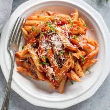

Spicy Arrabiata Penne

Arrabbiata (or arrabiata) literally means “angry” in Italian, because the sauce in this dish is supposed to be “angry” spicy. The Italian name for it is sugo all'arrabbiata and I was surprised to find that Americans often spell it wrong. It's supposed to be spelled with two b's — arrabbiata, but it seems that most people are spelling it incorrectly with just one “b” — arrabiata. Luckily, it's delicious even spelled wrong! And if you are worried about the heat, you can adapt the crushed red pepper measurements according to your tolerance for spice.
| Ingredients | Amount |
|---|---|
| Penne rigate | 1 pound |
| Olive oil | 1/4 cup |
| Garlic, chopped | 3 cloves |
| Chopped tomatoes | 1 26oz container |
| Red chile flakes | 1/2 teaspoon |
| Italian seasoning | 1/2 teaspoon |
| Fresh basil | 6 leaves |
| Parmagiano-Reggiano | 1 block |
| Kosher salt | According to taste |
| Freshly ground black pepper | According to taste |
Recipe
Serves six.
- Bring a large pot of water to a boil.
- Add kosher salt to the boiling water, then add the pasta. Cook according to the package instructions, about 9 minutes.
- In a large skillet over medium-high heat, add the olive oil and heat until the oil starts to shimmer.
- Add the garlic and cook, stirring, until fragrant, 1 to 2 minutes. Add the chopped tomatoes, red chile flakes, Italian seasoning and salt and pepper to taste.
- Bring to a boil and cook for 5 minutes. Remove from the heat and add the chopped basil.
- Drain the pasta and add it to the sauce.
- Garnish with Parmigiano-Reggiano flakes and more basil and serve warm.
Food gallery
